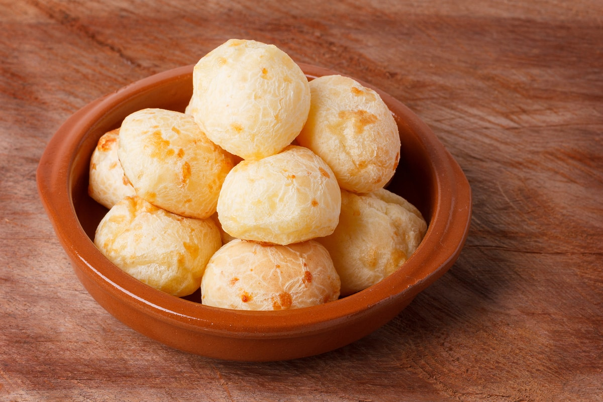

Chipa
La receta casera de chipá es una opción salada ideal para el desayuno y la merienda. Paso a paso para hacer en casa y acompañar con mate.
Masa de pizza
Masa de pizza casera y al estilo italiano. Preparar masa de pizza es fácil y bastante divertido. Lo mejor para una noche de películas con amigos.
Sala para pizza
La salsa para la pizza es la clave para que la pizza resulte espectacular. Podes hacer una masa casera increíble, pero una buena salsa hace la diferencia.

Sopa paraguaya
Una comida típica del norte argentino súper sencilla de hacer y con miles de opciones para disfrutar.